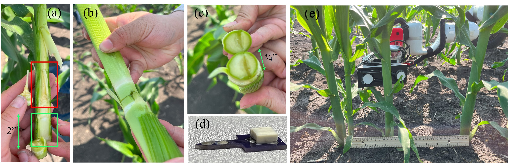
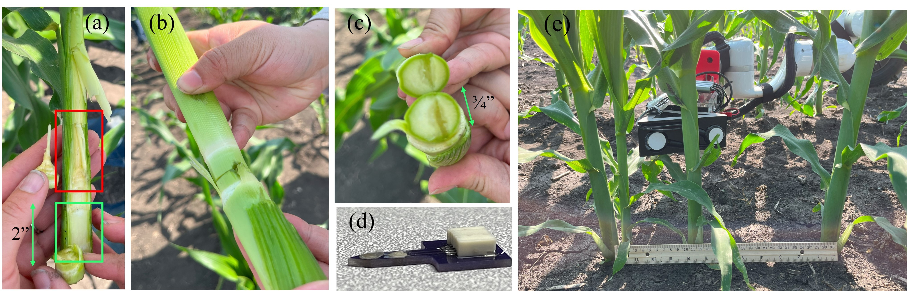

Design Specification
Corn interaction specification that guided the gripper design
Corn interaction specification that guided the gripper design
Custom end-effector that is designed to be mechanically simple while providing multi-modal sensor inputs.
Bill of Materials can be found here:
CAD file for the robot can be found here:
Use case
Sensor readings and locations